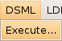
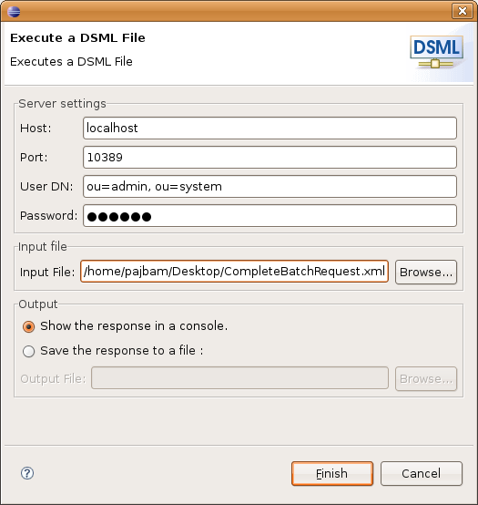
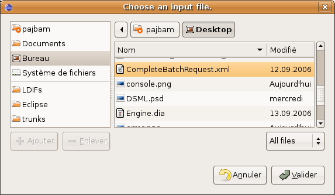
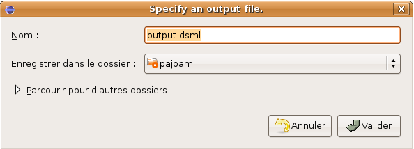
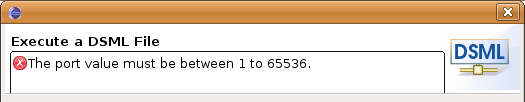

Executing a DSMLv2 file
In this section, you will learn how to execute a DSMLv2 file.
- Select Execute... from the DSML menu.

- A wizard shows up.

- The "Server Settings" section, allows you to enter the host, port, user's DN and password of the LDAP server you want to connect to.
- The "Input file" section, allows you to browse your file system to select the DSML file to execute.

- The "Output" section, offers you the choice between:
- Show the response (in DSML format) in a console

- Save the response to a file, allowing you to browse your file system to select the file.

- Click the Finish to execute the DSML file on the server.
- All fields of the "Server Settings" section are required (except
password, which can be empty), as well as a valid input file, and, if you choose the corresponding
option, an ouput file.
Any error is notified at the bottom of the window.
